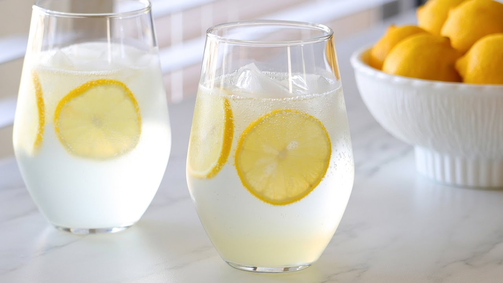
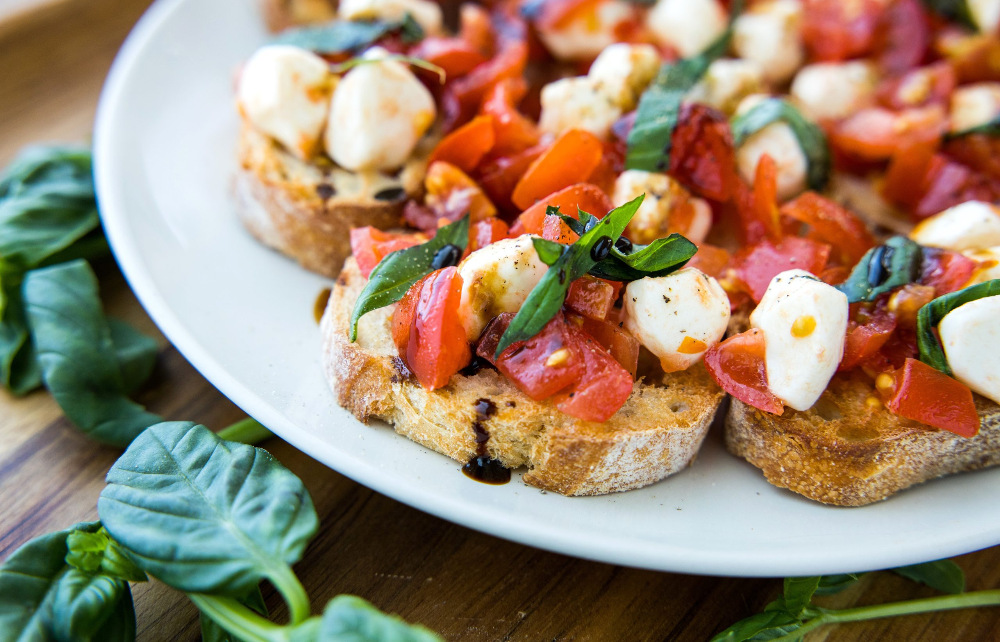

Italian Dinner at Home
A simple five-course Italian-inspired meal with fresh flavors, comforting classics, and a dessert to finish the night.
About This Menu
This menu is built around a casual Italian dinner that still feels polished and inviting. The meal starts light with a refreshing drink, moves into a classic appetizer and salad, then finishes with a creamy pasta dish and a traditional dessert.
Dinner Style
Fresh ingredients, simple recipes, and familiar Italian flavors make this meal easy to enjoy. It is designed to look organized on the page while also being responsive on different screen sizes.
Courses 1–3

Sparkling Lemon Water
Sparkling water is poured over ice and combined with freshly sliced lemons for a light and refreshing start. It takes only a few minutes to prepare and is served as a refreshing welcome before the first course.

Bruschetta
Bruschetta is made by toasting slices of bread and topping them with a mixture of diced tomatoes, fresh basil, garlic, olive oil, and balsamic glaze. It is assembled just before serving so the bread stays crisp.

Caesar Salad
Caesar salad is prepared by tossing chopped romaine lettuce with Caesar dressing, parmesan cheese, and croutons. It is mixed right before serving to keep the lettuce crisp and the flavors fresh.
Courses 4–5

Chicken Alfredo
Chicken Alfredo is made by cooking fettuccine pasta and topping it with grilled seasoned chicken and a creamy Alfredo sauce made from butter, cream, and parmesan cheese. It is served hot as the main dish of the meal.
Cannoli
Cannoli are made by filling crisp pastry shells with a sweet ricotta-based cream and finishing them with chocolate chips or powdered sugar. They are chilled before serving for a classic Italian dessert.